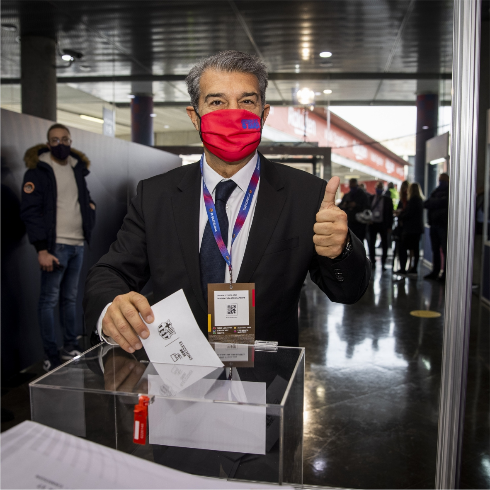
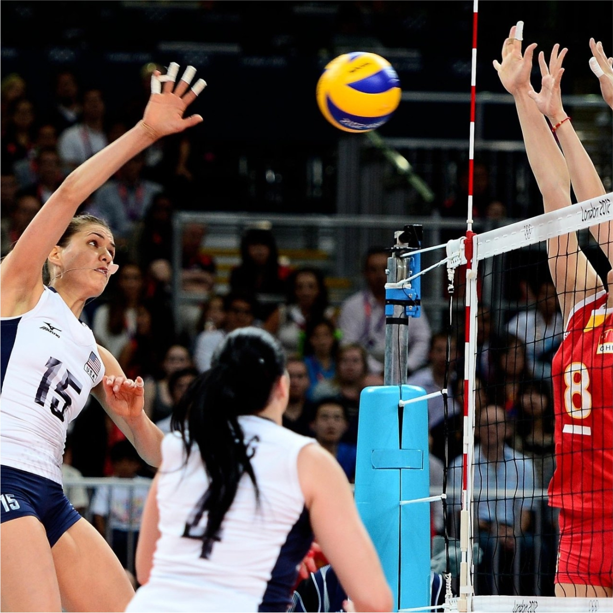
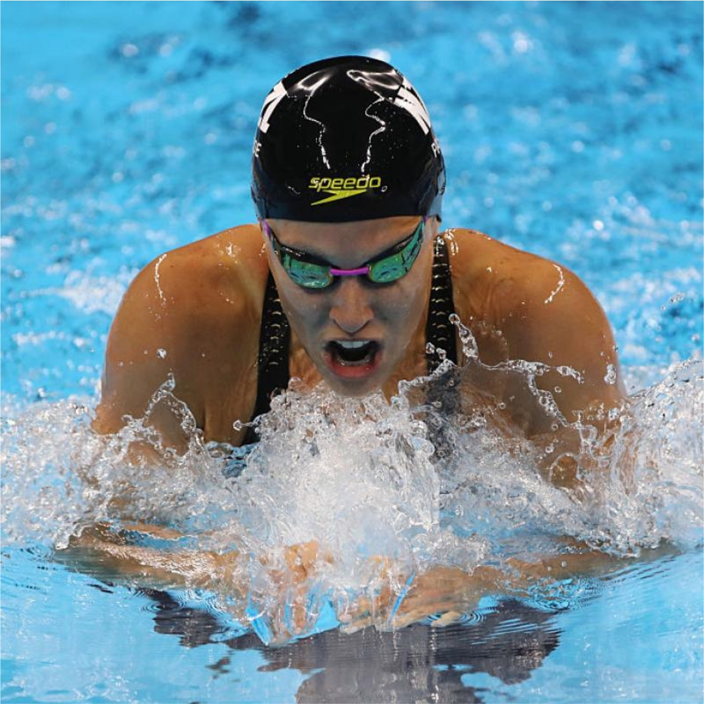
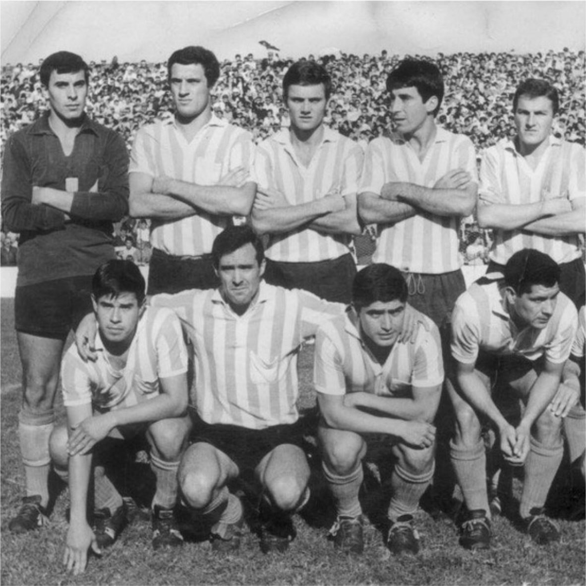

Archivo Historico
Se creara un archivo digital de toda la documentacion de la institucion.
Siguiendo con la iniciativa de apostar a la tecnologia, como ocurrio el año anterior con la
creacion
del socio digital.
Los documento fisicos, seran destruidos una vez terminada su digitalizacion de los mismos.
La tarea estara a cargo del departamento de cultura del Centro Social y Deportivo Rolón.
Futbol
Los azules y Deportivo Macachin igualaron 1-1 este miércoles en La
Bombonerita
roja. Rodriguez, de
penal, abrió la cuenta
para el Visitante, lo igualó Lopez para el elenco local.
Todos los goles de la noche llegaron en la etapa inicial.
Finalizada la jornada de la Zona B, CSyDR se mantiene en puestos de clasificación a cuartos
de
final
ya que está cuarto con 18 puntos.

Elecciones
El Presidente de la Junta Electoral, Stefano Di Carlo, dio a conocer los
resultados provisorios que,
con el 100% de los votos escrutados, consagran a Deniel Faierman como nuevo Presidente del
Centro
Social y Deportivo Rolon.

Voley
Las Vikingas se llevaron un partido increible contra su para de la capital
pampeana.
Fue 3 a 2, en un partido que dura mas de 2 horas de bibrante juego.
Este triunfo las posiciona segundas en la tabla general y se ilucionan con poder dar el
golpe.

Natacion
Se termino la espera. Luego de mas de 6 meses de remodelaciones, se
concreto
la
obra de ampliacion
del natatorio.
A partir de la proxima semana se reanudaran con el %100 de las actividades.
Las autoridades del club se mostraron muy conformes con los cambios y aseguraron que los
mismos
serviran para mejorar la calidad de entrenamiento de nuestros depostistas.

Primer Titulo
Se cumple 45 años del primer titulo provincial del elenco Rolonences.
Fue en el año 1977, cuando los Azules se consagraron campeones por primera vez en su
historia.
Un titulo que daria inicio a la grandicima historia del Club.